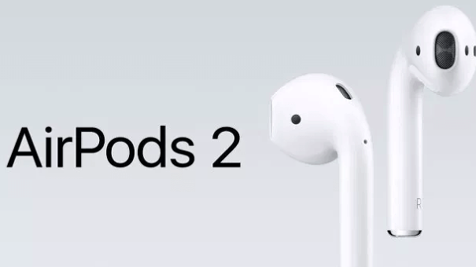

에어팟 1세대
150,000W
충전 케이스와 본품으로 이루어져 있으며, 라이트닝 케이블이 동봉되어 충전 케이스에 연결해 본품과 충전 케이스를 동시에 충전 가능하다. 본품만 가지고 5시간 사용 가능하며, 충전 케이스에 있는 배터리까지 사용하면 24시간 이상 사용 가능하다. 공식 스펙에 의하면 15분 충전으로 3시간을 쓸 수 있다고 한다. 충전 케이스를 아이폰에 가까이 가져간 후 뚜껑을 여는 것만으로 페어링 버튼이 아이폰에 나타나며, 아이폰의 화면에 뜨는 연결버튼을 누르면 자동으로 연결된다.

에어팟 2세대
190,000W
충전 케이스와 유닛으로 이루어져 있으며, 충전 케이스에 연결해 유닛과 케이스를 동시에 충전할 수 있다. 충전 케이스는 Qi 규격을 지원하는 무선 충전 케이스와 1세대와 동일한 충전 케이스로 두 종류가 있고, 1세대 이용자도 무선 충전 케이스를 별도로 구입할 수 있다. 무선 충전 케이스의 경우 기존 케이스 내부에 있던 LED 표시등의 위치가 외부로 변경되어 쉽게 충전 상태를 확인할 수 있다. 각각의 유닛은 5시간의 음악 재생이나 3시간의 통화가 가능하며, 충전 케이스에 있는 배터리까지 사용하면 24시간 이상 사용 가능하다.

에어팟 3세대
260,000W
충전케이스와 2개의 유닛으로 구성되어 있으며, 충전케이스에 연결해 케이스와 유닛을 동시에 충전할 수 있다. 무선충전을 지원하는 케이스가 기본으로 제공된다. 또한 커널형 이어폰의 필수품인 실리콘 팁 3개가 동봉되어 있다. S, M, L 사이즈 팁이 각각 1개씩 들어있으며 M 사이즈가 기본으로 장착되어있다. 추가적으로 에어팟 프로는 일반적인 이어폰과 노즐 구조가 상이하므로 에어팟 프로 전용으로 나온 이어팁 외에 다른 이어팁과 호환되지 않는다.